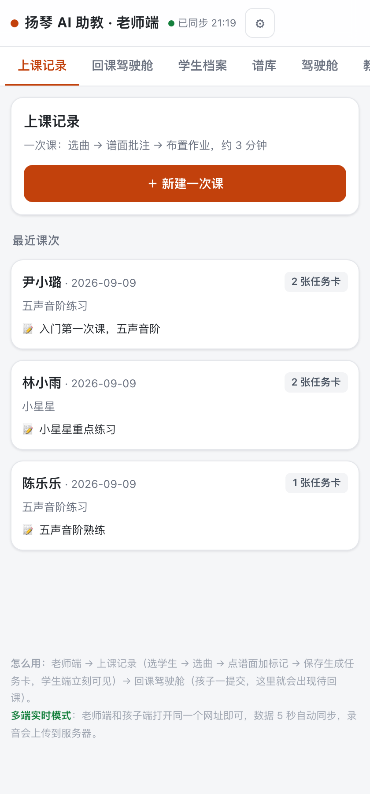
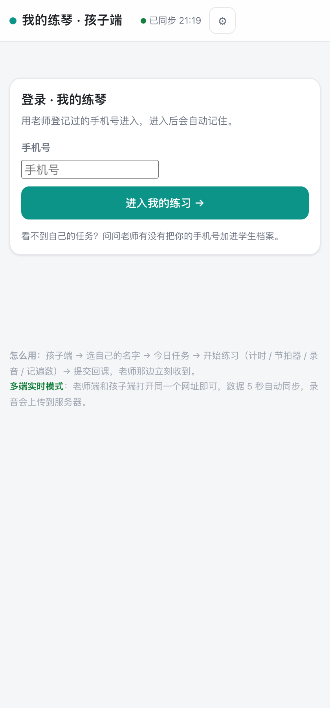
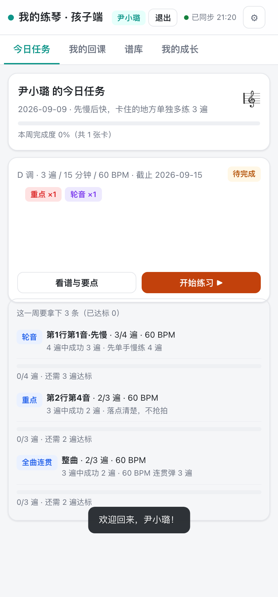
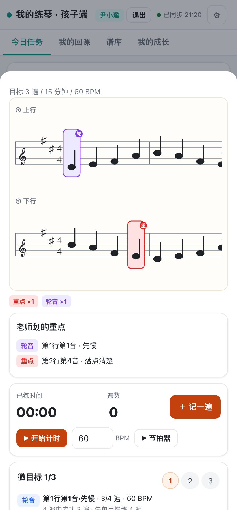

这次不动设计系统——「余音」的 token（宣纸底、墨阶、朱砂、宋体门面）在规范 v1 里已经定了。这份方案解决的是另一层问题：信息排布。你说"文字说明太多"，我把每一屏的字逐条数了一遍，结论是：界面在替产品说话，而它应该让产品直接做事。
①一句话结论
现在的 UI 是「说明书式」的：每屏底部常驻两段教程、同一事实在一屏里说两三遍、进度用文字念出来。改造方向一句话——
「解释的归引导，动作的归界面，数字的归图形。」
预期效果：常驻文字量减约 60%；每一屏扫一眼就知道"现在该干嘛"；视觉整体换入余音 token。
②逐屏诊断（8 处）
以下截图全部是当前线上原型的实拍（2026-09-09）。红点 = 文字冗余，深红点 = 结构性问题。
老师端 · 上课记录（默认首屏）

1顶部品牌还是旧名："扬琴 AI 助教 · 老师端"——产品已定名「余音」，且顶栏没有品牌视觉（圆点 + ⚙ emoji）。
2Tab 栏重复且溢出：源码里同时存在"回课驾驶舱"（基础版）和"驾驶舱"（v0.2 扩展包注入），还有"教学计划""历史/导出"把栏位挤到屏幕外（截图右侧被截断的"教…"）。
3页脚常驻教程："怎么用：老师端 → 上课记录（选学生 → 选曲 → 点谱面加标记 → 保存生成任务卡）…"+ "多端实时模式：…数据 5 秒自动同步…录会音上传到服务器"——两段 80+ 字的操作说明常驻每一屏。这是手册内容，不是界面内容。
4课次卡片信息重复：学生名下"五声音阶练习"（谱库名）和"入门第一次课，五声音阶"（课次摘要）两行说的是同一节课。
5主按钮橙棕 #c2410c：教务后台配色，与朱砂主色未统一。
孩子端 · 登录页

6品牌空窗：孩子（和家长）对产品的第一眼是一个灰底白卡，没有落墨 logo、没有「余音」字样——品牌主视觉缺席了最重要的位置。
7说明文字两句半："用老师登记过的手机号进入，进入后自动记住。""看不到自己的任务？问问老师有没有把你的手机号加进学生档案。"第一句可砍半，第二句是异常兜底、不该常驻。
孩子端 · 今日任务

8元数据一行塞五项："D 调 · 3 遍 / 15 分钟 / 60 BPM · 截止 2026-09-15"——无层级、无主次，孩子扫一眼抓不住重点（对 8-12 岁用户，"截止日期"才是最该跳出来的）。
9进度用文字念三遍：微目标区每条目标 = 标题行"3/4 遍" + 正文"3 遍中成功 3 遍 · 先单手慢练 4 遍" + 进度行"0/4 遍 · 还需 3 遍达标"。同一个数字出现三次，纯文字、无图形。头部还有"这一周要拿下 3 条（已达标 0）"——继续用字数进度。
10完成度 0% 有考核感："本周完成度 0%（共 1 张卡）"——百分比数字放大了"零"的挫败感，与红线"不做价值判断"有隐性张力（它是事实判断，但表达方式像 KPI）。
11批注 chips 彩色马卡龙："重点"红底、"轮音"紫底、"全曲连贯"蓝底——回到规范 v1 批过的老问题：多色隐含严重度排序，应统一朱砂单色。
12欢迎 toast 黑底突兀："欢迎回来，尹小璐！"黑底白字压在页面底部，像系统报错弹窗，不像问候。
孩子端 · 练习页

13"重点"说了三处：谱面上的批注框（看得见）+ 谱面下方 chips"重点 ×1 轮音 ×1" + 整块"老师划的重点"卡片（把同样的批注再用文字列一遍）。谱面本身就是重点的载体，文字块是纯冗余，占了半屏。
14计时区不够主角：计时器是这个页面的使用核心，但"已练时间 00:00 / 遍数 0"和开始计时、BPM、节拍器挤在一起，视觉权重反而低于上面的说明文字。
③减字三原则（本次改造的判据）
| 原则 | 内容 | 典型应用 |
|---|
| P1 一事实一遍 | 同一信息在一屏内只允许出现一次；重复的候选处理方式是删除或图形化，不是换个说法。 | 微目标"3/4 遍"三连；练习页"重点"三处；课次卡双行曲名 |
| P2 说明离场 | 教用户怎么用的文字全部移进首次引导（浮层）与帮助入口，界面只保留"此刻的动作"。 | 页脚"怎么用/多端实时模式"两段 → 首次引导浮层 |
| P3 数字成图形 | 遍数、进度、条数一律用点阵/进度条表达，文字只保留必要数值。 | "0/4 遍 · 还需 3 遍达标" → ○○○○ 圆点阵；"这一周要拿下 3 条" → 三个格子 |
④逐屏改造示范（before → after）
after 一律按余音 token 绘制：宣纸底、朱砂主按钮、宋体字标、圆点阵进度。以下三组是改动最大的屏。
4.1 老师端 · 上课记录
BEFORE（现状）
● 扬琴 AI 助教 · 老师端 ● 已同步 21:19 ⚙
上课记录 | 回课驾驶舱 | 学生档案 | 谱库 | 驾驶舱 | 教…
上课记录
一次课：选曲 → 谱面批注 → 布置作业，约 3 分钟
＋ 新建一次课
尹小璐 · 2026-09-092 张任务卡
五声音阶练习
📎 入门第一次课，五声音阶
怎么用：老师端 → 上课记录（选学生 → 选曲 → 点谱面加标记 → 保存生成任务卡，学生端立刻可见）→ 回课驾驶舱（孩子一提交，这里就出现待回课）。
多端实时模式：老师端和孩子端打开同一个网址即可，数据 5 秒自动同步，录音会上传到服务器。
AFTER（余音版）
余音老师端
上课记录 · 回课 · 学生 · 谱库 更多
最近课次
尹小璐 09-09 · 五声音阶
2 张任务卡
林小雨 09-09 · 小星星
1 份待回课
＋ 新建一次课
第一次用？看 30 秒引导
- 品牌入场：落墨音点标 + 宋体「余音」，⚙ 换成设置入口；同步状态降为 4px 灰点（异常才变朱砂）
- Tab 收敛：四项 + "更多"收纳"教学计划 / 历史/导出"，删掉重复的"驾驶舱"
- 课次卡并双行为一行：学生名 + 日期 + 曲目一行解决；有新回课的卡直接给朱砂信号"1 份待回课"（行动点前置）
- 教程两段全删 → 变成页脚一行"第一次用？看 30 秒引导"（点开浮层）
- "新建一次课"降位：记录列表是回访高频内容，放上面；新建放列表尾（也可反着排，见决策④）
4.2 孩子端 · 登录页
BEFORE（现状）
● 我的练琴 · 孩子端 ● 已同步 21:19 ⚙
登录 · 我的练琴
用老师登记过的手机号进入，进入后自动记住。
手机号
进入我的练习 →
看不到自己的任务？问问老师有没有把你的手机号加进学生档案。
怎么用：孩子端 → 选自己的名字 → 今日任务 → 开始练习（计时 / 节拍器 / 录音 / 记遍数）→ 提交回课，老师那边立刻收到。
多端实时模式：老师端和孩子端打开同一个网址即可，数据 5 秒自动同步，录音会上传到服务器。
- 品牌主视觉入场：涟漪音点 + 宋体字标 + slogan——孩子和家长的第一眼就是「余音」
- 文案三句 → 一句半：删"进入后自动记住"（自动记住是默认行为，不用announce）；异常兜底句收进小字
- 教程两段全删（同 P2，移入引导浮层）
- 顶栏登录前隐藏：没登录就没有"我的练琴"顶栏，页面更干净
4.3 孩子端 · 今日任务（微目标圆点阵是核心改动）
BEFORE（现状）
尹小璐 的今日任务
2026-09-09 · 先慢后快，卡住的地方单独多练 3 遍
本周完成度 0%（共 1 张卡）
D 调 · 3 遍 / 15 分钟 / 60 BPM · 截止 09-15 待完成
重点 ×1 轮音 ×1
这一周要拿下 3 条（已达标 0）
轮音 第1行第1音·先慢 · 3/4 遍 · 60 BPM
4 遍中成功 3 遍 · 先单手慢练 4 遍
0/4 遍 · 还需 3 遍达标
重点 第2行第4音 · 2/3 遍 · 60 BPM
3 遍中成功 2 遍 · 落点清楚，不抢拍
0/3 遍 · 还需 2 遍达标
AFTER（余音版）
今天的任务
09-15 前完成
五声音阶练习
D 调 · 60 BPM
先慢后快，卡住的地方单独多练 3 遍
老师的话
这周的小目标 0 / 3
- 微目标从 3 行 → 2 行：标题行（技法标签 + 片段）+ 圆点阵（练几遍画几个圈，达成涂实朱砂）+ 一句方法提示。"0/4 遍 · 还需 3 遍达标"这类复述全部删除——圆点阵自己会说话
- 技法标签统一朱砂描边单色（红/紫/蓝马卡龙退场，规范 v1 的批注单色原则延伸到 chips）
- "本周完成度 0%" → "这周的小目标 0/3"：数字缩小、不做百分比，消除 KPI 感
- 截止日期升为标题副位（孩子唯一需要记住的元数据）；调号/BPM 降为角标
- 标题改"今天的任务"：对孩子说话，不用报户口式"尹小璐的今日任务"
4.4 孩子端 · 练习页（删"老师划的重点"块）
- 删除整块"老师划的重点"：谱面批注已经是重点的载体，下方 chips + 文字卡是同一信息的第二、第三次复述。删除后练习页一屏能同时看到谱面和计时器。
- 计时区升为主角：时间字号放大（24px→40px 级），"记一遍"按钮与计时器并排成主操作对；BPM/节拍器收进一行次级控件。
- 欢迎 toast 改墨色：深墨底 #1C1A17 已是黑——问题其实在出现时机与时长，改为顶部浮现 2.5s 自动消散，圆角加大、不带系统弹窗感。
⑤改什么 / 明确不改什么
| ✅ 这次改 | 🔒 不动 |
|---|
· 全部颜色/字体/圆角换入余音 token（宣纸底、墨阶、朱砂、宋体门面）
· 顶栏品牌化（双端），同步徽章降级
· 页脚教程删除 → 首次引导浮层 + 帮助入口
· 微目标圆点阵、chips 单色化、元数据分层
· 删"老师划的重点"块、tab 收敛、课次卡并行
· 登录页品牌主视觉 + 文案精简
|
· 功能一个不减：计时、节拍器、录音、记遍数、批注、回课、驾驶舱全保留
· 三条红线：不打断练习、不排名打分、无积分商城（本次改造反而更贴红线）
· 信息架构：M2 任务卡 + M3 回课驾驶舱的双端结构不变
· 技术架构：仍只改 index.html 源文件再派生，零新依赖
|
⑥落地步骤（确认后执行）
| 步 | 内容 | 估时 | 效果占比 |
|---|
| 1 | 换 :root token + 顶栏品牌化 + 同步点降级 + toast 修正（双端） | ~50 分钟 | 观感 50% |
| 2 | 删页脚教程、建首次引导浮层（双端各一版，3 步图文） | ~40 分钟 | 减字 40% |
| 3 | 孩子端任务卡/练习页重构（圆点阵、chips 单色、删重点块、计时区放大） | ~90 分钟 | 体验核心 |
| 4 | 老师端课次卡/tab 收敛/驾驶舱配色统一 + 登录页品牌视觉 | ~60 分钟 | 收尾 |
每步独立可验证，Playwright 全链路回归后再部署公开链接；只改 index.html 源文件，teacher/student 由脚本派生。
⑦请你确认的 4 个决策点
决策 ① 页脚教程：两段"怎么用 / 多端实时模式"——建议全删，移入首次引导浮层（每个用户只看一次）。另一选项：保留一行折叠式"？使用帮助"在页脚。
决策 ② 完成度表达："本周完成度 0%（共 1 张卡）"——建议改为"这周的小目标 0/3"，不用百分比（消除 KPI 感、更贴红线）。另一选项：保留百分比但只在 ≥1 时显示。
决策 ③ 冗余 tab：扩展包注入的"驾驶舱 / 教学计划 / 历史/导出"与基础 tab 并存——建议删"驾驶舱"（与回课驾驶舱重复），"教学计划、历史/导出"收进"更多"。
决策 ④ 首屏动作：上课记录页"新建一次课"大按钮——建议降为列表尾（老师回访时最常看的是"谁交了作业"，不是新建）。另一选项：保持置顶（课密集日体验更好）。